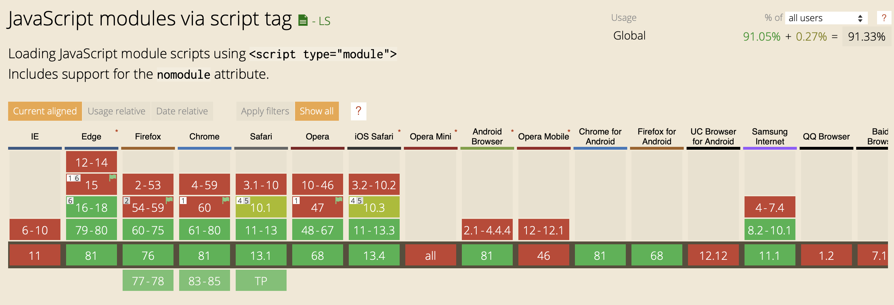
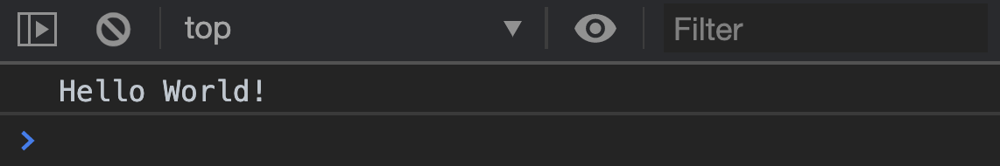
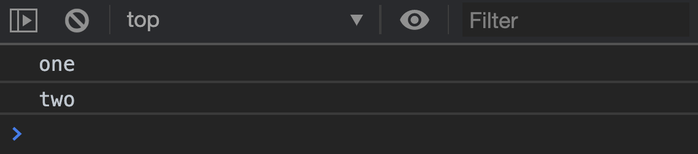
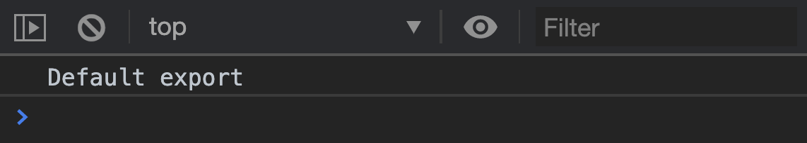
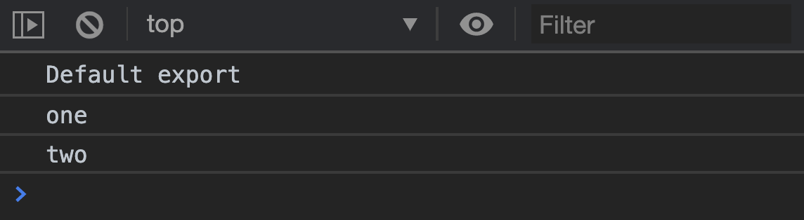

ES6 Modules are also called JavaScript Modules. They let you import code with the import keyword. They also let you export code with the export keyword.
ES6 Modules are the modern way of including code into a project. Support for ES6 Modules is excellent. Always prefer ES6 Modules over <script> tags.

Importing basics
First, your main JavaScript file must have a type attribute set to module.
<script type="module" src="main.js"></script>
You can import files with the import keyword. Files imported this way are called modules.
import './path-to-imported-file.js'
Path to modules must be relative to the current path. If your library.js file and main.js file are in the same folder, you can use this:
import './library.js'
The import keyword must be written above other code.
import './library.js'
import './another-file.js'
import './yet-another-file.js'
// Other code here
Imported files are executed immediately once they are accessed.
You can export variables with the export keyword. Variables exported this way are called named exports.
// library.js
export const hello = 'Hello World'
You can import named exports by including curly braces in the import statement. It’s as if you’re destructuring variables from an object.
// main.js
import { hello } from './library.js'
console.log(hello)

You can export any number of named exports.
// library.js
export const one = 'one'
export const two = 'two'
// main.js
import { one, two } from './library.js'
console.log(one)
console.log(two)

If you wish to, you can use the export keyword at the end. When you do this, you export a JavaScript object that contains all named exports.
// library.js
const one = 'one'
const two = 'two'
export { one, two }
// main.js
import { one, two } from './library.js'
console.log(one)
console.log(two)
Importing many named exports
You can import all named exports with the * keyword. If you use *, you also need to use an as keyword to create an object that holds all named exports.
import * as library from './library.js'
console.log(libary.one)
console.log(library.two)
You can rename named exports with the as keyword as well. But I don’t recommend doing this. It’s much easier to understand when everyone uses the same variable name.
// Possible, but don't do this
import { one as five, two } from './library.js'
console.log(five)
console.log(two)
Default Export
You can export one variable with the default keyword. This variable is called the default export.
// Library.js
export default 'Default export'
Note: you cannot use const, let, or var directly after the default keyword.
// Doesn't work
export default const 'Default export'
You can import the default export by giving the variable a name.
import whateverYouWant from './library.js'
console.log(whateverYouWant)

Just like it’s bad practice to rename named exports, it’s also bad practice to rename default exports. The best way to keep track of default exports is to use the library’s name. If the library doesn’t have a name, you can use the file name.
import library from './library.js'
Importing both named and default exports
You can import both named and default exports at the same time.
import library, { one, two } from './library.js'
console.log(library)
console.log(one)
console.log(two)

It gets confusing when there are default and named exports at the same time. I prefer using one type of exports only.
The mjs extension
Some people like to use the mjs extension when they write ES6 Modules. mjs exists to help Node (and hence bundlers like Webpack and Rollup) understand they’re dealing with ES6 Modules, not CommonJS.
If you write frontend JavaScript without a bundler, you don’t need .mjs.
.mjs can cause headaches even if you use a bundler. (This is a whole new topic on bundlers that’s outside Learn JavaScript’s scope).
Building libraries with ES6 Modules
If you want to build an Automatic Library, you can code normally inside a JavaScript Module file. There’s no need to encapsulate your code via a block scope or IIFE.